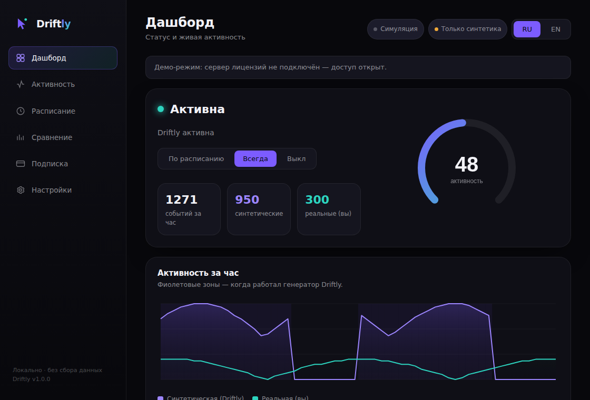
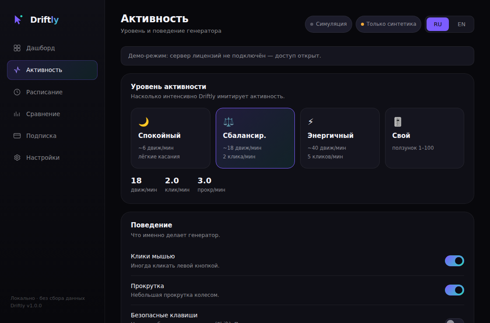
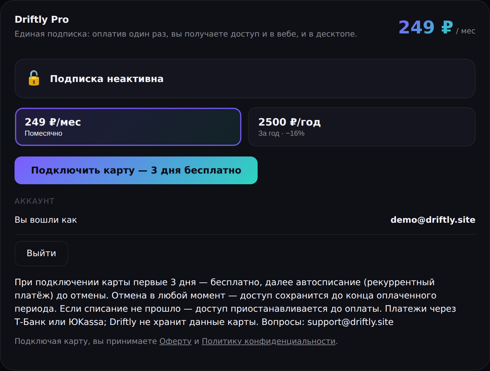
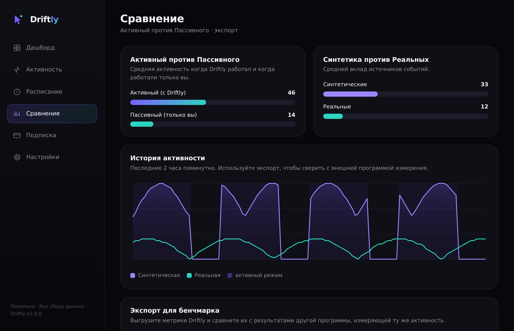

Синтетическая активность
Гуманизированные движения мыши, клики, прокрутка и опциональные безопасные нажатия клавиш — с плавными траекториями и микро-джиттером.
Driftly — приложение для веба и десктопа, которое генерирует гуманизированную активность по расписанию, чтобы компьютер не считался простаивающим, и непрерывно измеряет её, сравнивая режимы Активный (с Driftly) и Пассивный (без Driftly). 3 дня бесплатно при подключении карты.
3 дня бесплатно · локально · без сбора данных

Гуманизированные движения мыши, клики, прокрутка и опциональные безопасные нажатия клавиш — с плавными траекториями и микро-джиттером.
Спокойный, Сбалансированный, Энергичный или своя интенсивность 1–100. Подбирайте темп под задачу.
Рабочие часы, дни недели и несколько диапазонов времени. Опциональная пауза при реальной активности — чтобы не мешать вам.
Активный против Пассивного, синтетические против реальных событий. Поминутная оценка активности в реальном времени.
Выгружайте метрики, чтобы сравнить Driftly с внешней программой измерения активности.
Без телеметрии и сбора данных об активности — всё хранится на вашем компьютере. Для подписки нужны только email и платёжный статус; данные карты обрабатывает провайдер.
Установите Driftly на Windows, macOS или Linux. Приложение запускается даже без нативных модулей — в режиме симуляции.
Выберите уровень активности, рабочие часы, дни недели и диапазоны времени. При желании включите паузу на реальной активности.
Наблюдайте поминутную активность, сравнивайте Активный и Пассивный и экспортируйте метрики в CSV/JSON для бенчмарка против другой программы.
Реальные экраны Driftly: десктоп-дашборд, сравнение режимов и панель подписки.


Значения — приблизительные показатели в минуту; все движения гуманизированы (плавные траектории, джиттер, случайные интервалы).
небольшие плавные касания
средние плавные траектории
более крупные траектории
интенсивность 1–100
Driftly непрерывно измеряет активность и сравнивает её двумя способами.

Реальный экран «Сравнение»: Активный против Пассивного и синтетика против реальных — с числовыми оценками.
Никакой аналитики, телеметрии и отчётов о сбоях. Данные об активности не покидают устройство; для подписки используется только email и платёжный статус.
config.json и metrics.json лежат в стандартной папке приложения вашей ОС и никогда не выгружаются. Удалите их в любой момент.
Driftly считает события (движение, клики, прокрутка, клавиши) для оценки активности. Содержимое ввода не логируется — никогда.
Driftly не встраивает сторонние трекеры и не передаёт данные третьим лицам. Сайт статический и не ставит трекинг-куки.
Одна подписка открывает обе версии: веб-версию и десктоп. Платите один раз — пользуйтесь везде.
149 ₽ / мес
или 1500 ₽/год выгода 16%
3 дня бесплатно при подключении карты
Начать 3 дня бесплатноТ‑Банк · ЮKassa · карта
3 дня бесплатно при подключении карты, затем 149 ₽/мес списываются автоматически (рекуррентный платёж) до отмены подписки. Отмена в любой момент. Если списание не прошло (недостаточно средств), доступ приостанавливается до оплаты. Оплата через Т‑Банк, ЮKassa или картой; данные карты не хранятся.
Доступно для Windows, macOS и Linux. Установщики публикуются в GitHub Releases.
Установщик .exe (10/11)
Скачать для WindowsОбраз .dmg (Intel / Apple Silicon)
Скачать для macOSAppImage / .deb
Скачать для LinuxДесктоп-сборки публикуются в GitHub Releases по мере выпуска. Уже сейчас Driftly работает прямо в браузере — без установки.
3 дня бесплатно при подключении карты, далее подписка. Одна подписка — веб и десктоп. Все права принадлежат владельцу.
При подключении карты первые 3 дня бесплатны, далее — подписка Driftly Pro: 149 ₽/мес или 1500 ₽/год (−16%) с автопродлением до отмены. Одна подписка работает и в веб-версии, и в десктопе. Отменить можно в любой момент; при неуспешном списании доступ приостанавливается до оплаты.
Данные об активности — нет: настройки и метрики хранятся локально, без аналитики и телеметрии. Для подписки используется только email и платёжный статус аккаунта; данные карты обрабатывает платёжный провайдер (Т‑Банк или ЮKassa), Driftly их не хранит.
Driftly — кроссплатформенное приложение на Electron: Windows, macOS и Linux.
Driftly предназначен для автоматизации, защиты от простоя и тестирования на системах, которыми вы владеете или которые вам разрешено использовать. Нажатия клавиш по умолчанию отключены и используют безопасные клавиши; есть пауза при реальной активности.
Генерация создаёт синтетические события (движения, клики, прокрутку). Измерение непрерывно считает события и вычисляет оценку активности, разделяя синтетические и реальные события и сравнивая режимы Активный и Пассивный.
Да. Driftly производит контролируемую известную активность и экспортирует метрики в CSV/JSON, чтобы вы сопоставили их с результатами внешней программы измерения активности.